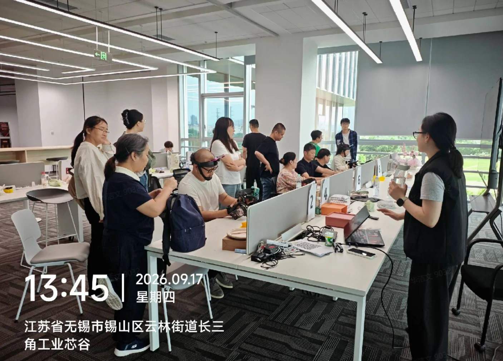
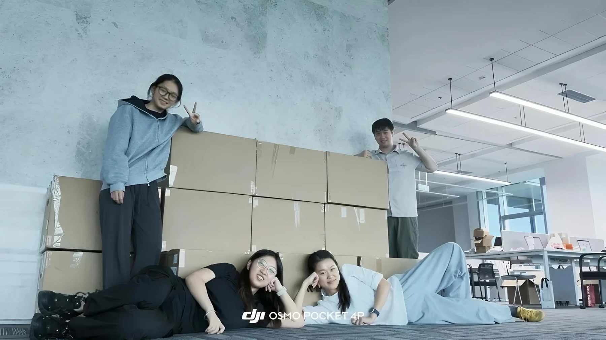
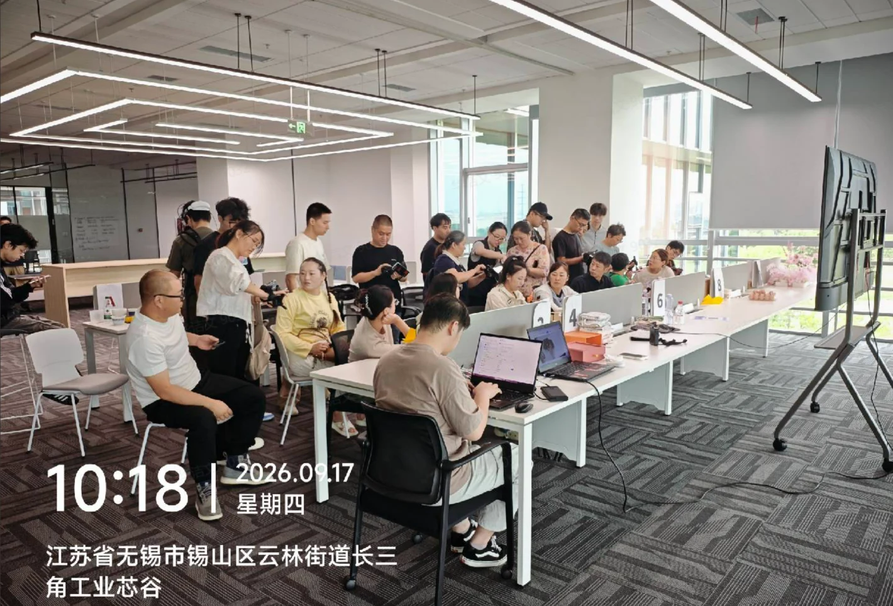

数采实习生招募
你的每一次动手，都是 AI 成长的养料。
用真实示范，帮助机器人理解动作、积累经验。
在采集、质检与反馈中，参与 AI 的成长。
01 / MEET YOUR MISSION
让机器人学会行动，
从你的一次示范开始。
你认真完成的操作，
会成为机器人学习真实世界的素材。

一条数据的旅程 点击探索 ↓
高质量靠标准 · 高效率靠产线 · 有效性靠闭环
SMALL ACTIONS. REAL LEARNING.
一个小动作，也有大门道。
点一个动作，看看你会关注什么。
01 / 抓取与放置
拿稳，也要放准。
按任务要求抓起物体，移动到指定位置，再平稳放下。
任务示意 · 具体采集内容以项目安排为准。
UMI · EGO · 数据手套 · 肌电手环 · 智能眼镜
按项目配置使用02 / FIND YOUR PATH
从新手出发，
练出自己的硬本领。
带着这些特质，来聊聊你的可能性。
好奇心 ✦认真细致 ✦愿意动手 ✦乐于协作 ✦03 / YOUR FIRST DATA CHALLENGE
如果你是质检员，
这一条，能通过吗？
30 秒小体验，感受数据质量的判断方式。
仅为互动示例，不是招聘测评。
抓取 → 遮挡 → 放置
训练用途：学习成功完成取放任务
04 / BUILD IT TOGETHER
在真实项目里实践，
和一群伙伴一起成长。
华智（无锡）人工智能科技有限公司
具身数据 · 具身模型 · 具身应用
SCENE FIRST
场景为王。
让真实经验，驱动持续进化。
从真实场景需求出发，连接数据、模型与应用。
你参与的数据工作，是这条链路的起点。
具身数据
多源采集、处理审核与资产治理
具身模型
WAM-inT 工业装配具身模型
具身应用
在真实工位验证效果，反馈回流
数据驱动应用 应用反哺数据

认真做事，也尽兴同行。

从「我想了解 AI」，
到「我参与了 AI」。
加入，从一次交流开始。
扫码登记意向 → 招募沟通 → 了解具体安排
地点、周期、出勤与补贴，以招聘沟通确认为准。
没有相关经验，应该从哪里开始？+
你可以先了解任务要求、练习基础操作，再在反馈中逐步提升。具体岗位要求请与现场招募人员沟通。
数据采集，是把动作录下来就够了吗？+
还要让关键交互清楚、任务过程完整，并按规范记录结果。遇到遮挡、异常或任务失败，需要反馈、补采或按用途分类。
在哪里实习？补贴和时间如何安排？+
请扫码登记意向，或直接咨询现场招募人员，确认实习地点、周期、出勤要求和补贴标准。